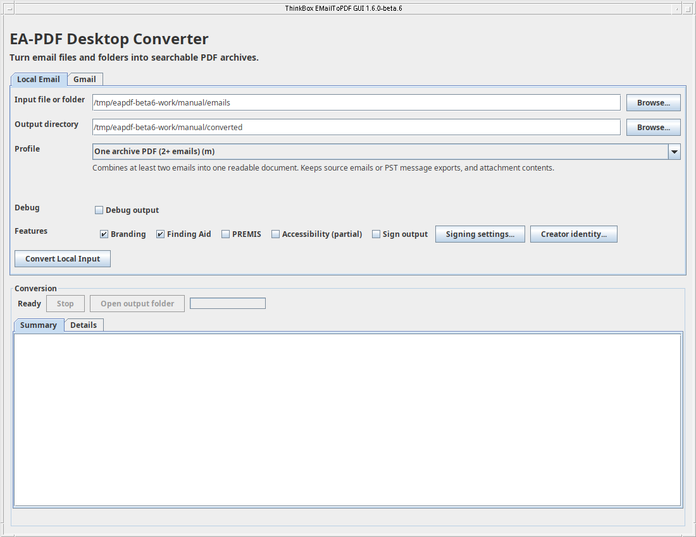
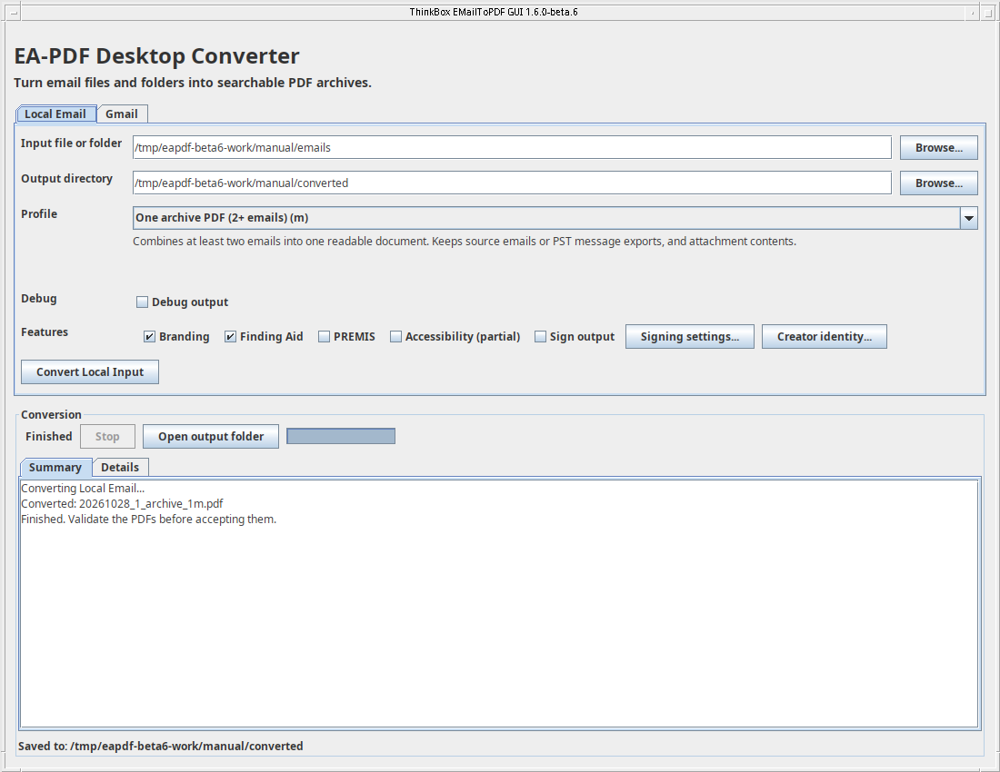
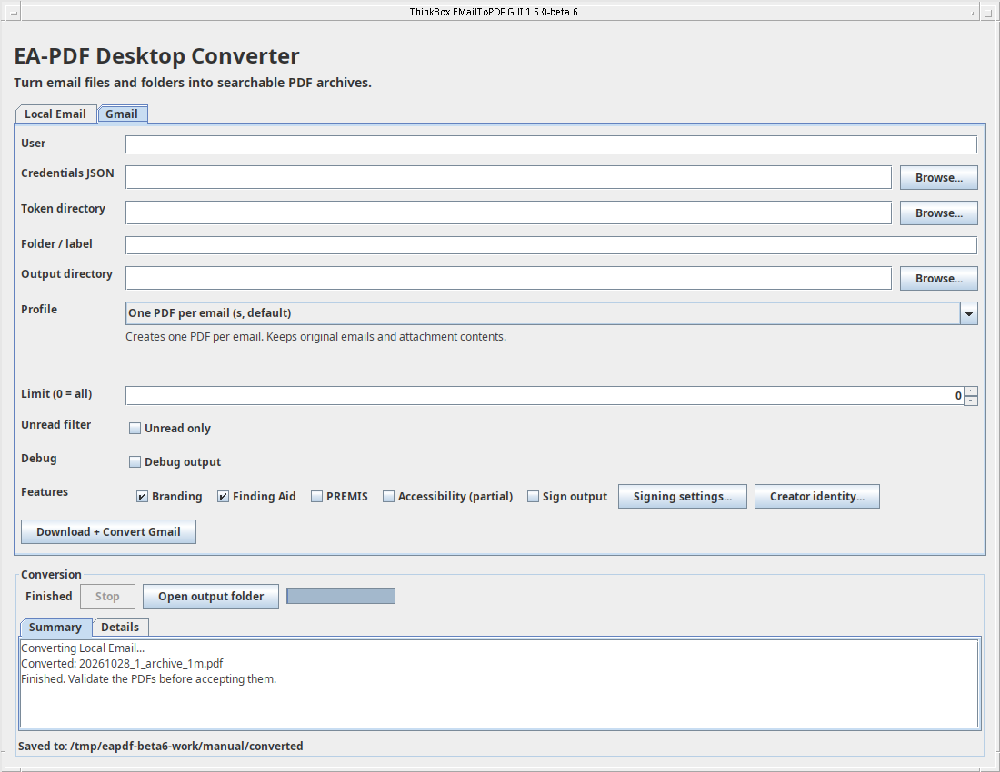
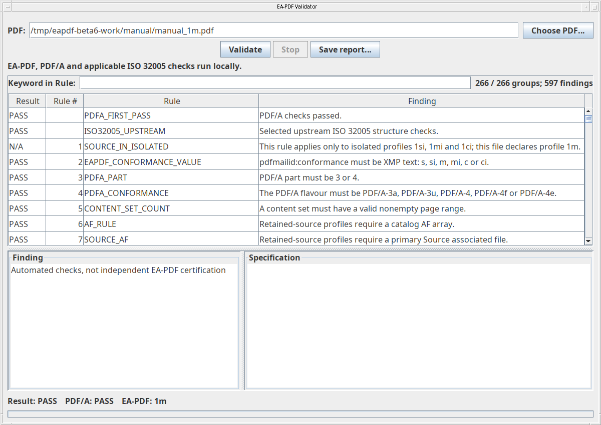
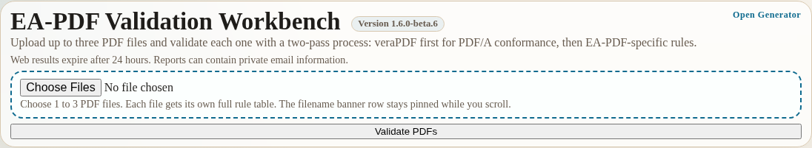
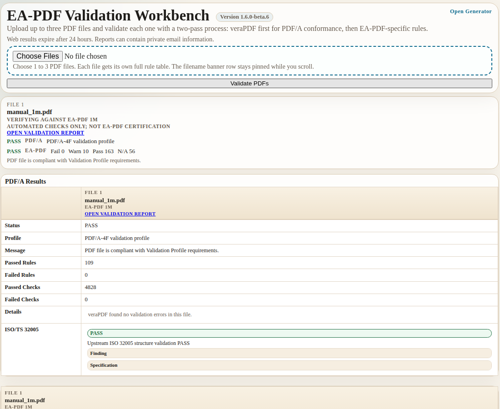
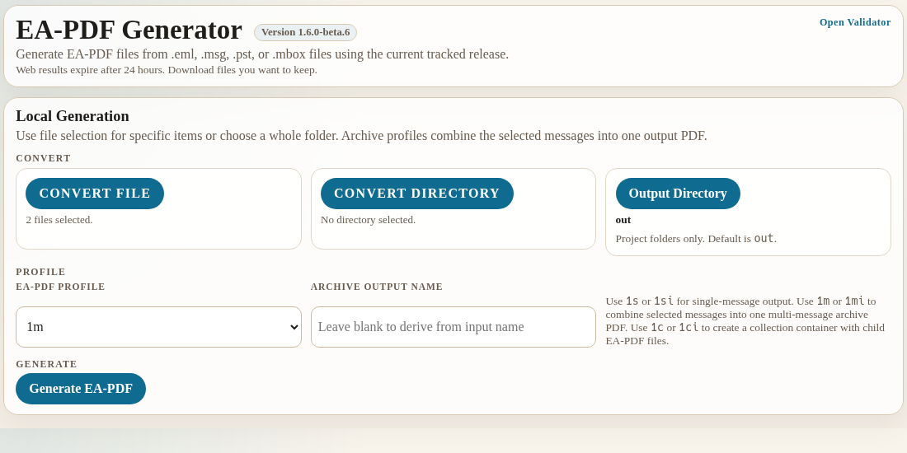
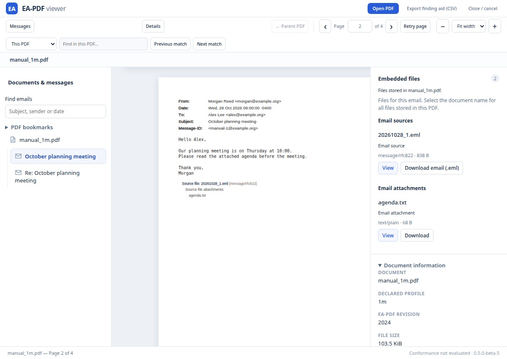
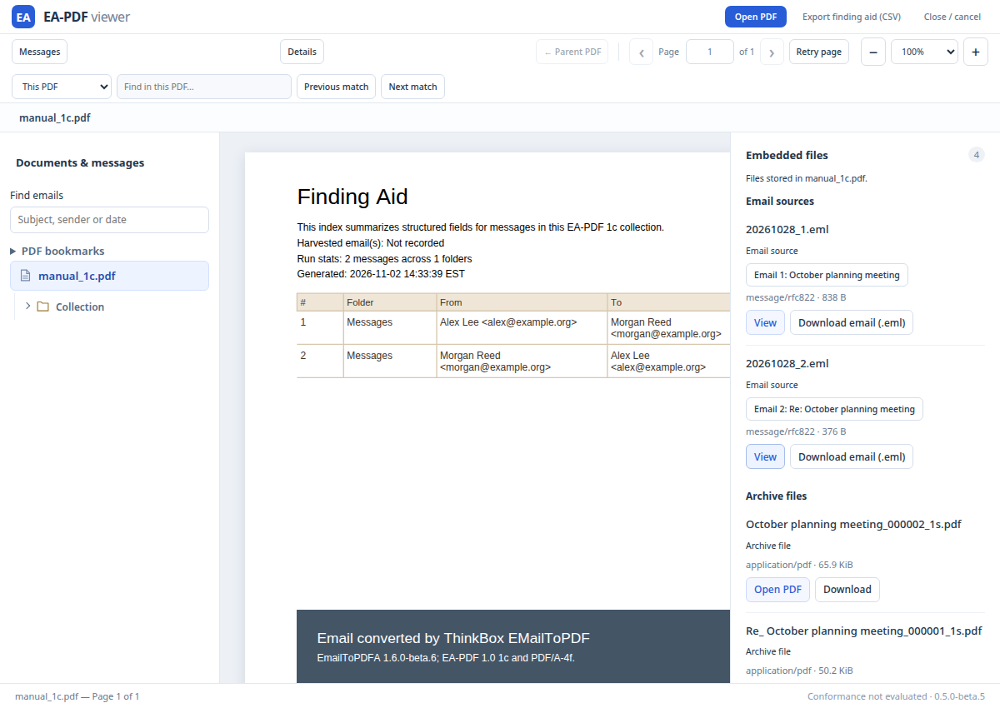
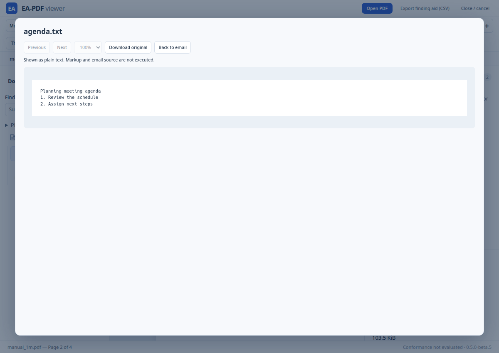

User Manual · Creator and validators 2.1.0-beta.1 · documentation revision 11 November 2026
EA-PDF converts email into PDF files for preservation and access. It supports saved EML and MSG messages, PST and MBOX mailboxes, and Gmail downloads.
The creator produces readable email pages with structured metadata and retained source messages and attachments where the selected profile allows them. The validators check PDF/A and EA-PDF requirements. The viewer lets people browse messages, collections and embedded files.
Created by Thinkbox.DIGITAL.
Screenshots illustrate real earlier beta sessions using fictional mail; some layouts and labels have since changed. Follow the current controls described in the text. The screenshot set is not a fresh acceptance record for this documentation revision.
1. Understand your files and choose an output
Read the conversion warnings
A finished conversion can still have limitations. Review the warnings before accepting the PDF. The output folder contains progress.json: open it in a text editor to see the job status, the PDF checksums and the warnings. Keep it with the conversion log and validation reports. A later conversion to the same folder replaces this status file.
Each entry in conversion_diagnostics identifies the source and message, explains what happened and its effect, and suggests what to do. For example, TEXT_RECOVERED means some displayed characters may differ from the original. SOURCE_INCOMPLETE means source content could not be recovered. A DATE_PRECISION_REDUCED warning means native PST fractional seconds became whole seconds in the reconstructed message and PDF date. Keep the original PST if that timing matters.
The creation receipt identifies the finished PDF but does not replace validation. Its PDF/A and EA-PDF validation fields say NOT_RUN because those checks belong to the separate validator. Run the Java validator on the published PDF and keep its report. A passing report does not erase conversion warnings.
What the project produces
The creator turns email into searchable PDF pages and adds information that identifies messages, their sources and their attachments. EA-PDF means Email Archiving PDF: it describes how email information is organized inside the PDF. PDF/A is a preservation format for PDFs. This creator currently writes PDF 2.0 with PDF/A-4f identification for all six EA-PDF profiles.
A validator checks the file's structure and available evidence. The viewer helps you read it. A PDF opening successfully does not mean it passed validation. A validation PASS does not mean every embedded file is safe to run, or that the PDF is independently certified.
Which input do you have?
File or source
What it usually contains
How to use it
EML (.eml)
One email saved from a mail program.
Select the file, or a folder of EML files.
MSG (.msg)
Usually one Outlook message.
Select a saved Outlook message or a folder of messages.
PST (.pst)
An Outlook mailbox with folders and messages.
Choose separate message PDFs, an archive, or a collection in the desktop creator. The web creator requires an archive or collection.
MBOX (.mbox)
Several messages stored together, often from a mailbox export.
Select the mailbox file.
Gmail
Messages in a Google account.
Use the creator's Gmail tab or Gmail command-line entry point; account authorization is required.
If you have only a message open in a mail program, first use that program's save or export command. Menu names vary. This project does not open an Outlook account directly; a saved PST or MSG is an input. A file extension alone cannot make an unrelated file an email.
Choose one of six profiles
A profile is an output arrangement. Choose based on how the recipient will read the email and whether the original source assets should travel with it.
Profile
Choose it when you want...
Source and attachment policy
1s
One PDF for each email.
Retains the available source email and native attachments.
1si
One PDF for each email with originals omitted.
Omits source email and native attachment payloads.
1m
At least two emails in one continuous document, convenient to read or print.
Retains sources and native attachments.
1mi
The same continuous document with originals omitted.
Omits sources and native attachment payloads.
1c
One collection file containing separately openable email PDFs, with folder/label grouping.
Retains sources and attachments in the message PDFs. This creator makes 1s children.
1ci
A collection containing separately openable copies with originals omitted.
This creator makes 1si message children.
Start with 1s for one email. Choose 1m for a combined reading copy. Choose 1c when folder browsing and separately extractable messages matter. The local archive command requires two or more messages for 1m/1mi. A collection can contain one message.
The letter i means isolated. It does not mean anonymized or redacted. Visible addresses, body text, metadata and inline images can remain. Attachment markers may remain while their payloads contain zero bytes.
Keep your originals
For EML and MSG, a retained-source PDF includes the original message asset. For PST, MBOX and Gmail, it includes individual exported or reconstructed messages. It does not include the original PST/MBOX container or a complete copy of the Gmail account. Keep the original mailbox export separately when its full format and properties matter. Conversion does not recover information that was already missing or damaged.
A collection's outer pages are its introduction and index. To read the actual emails, open its embedded message PDFs. A basic PDF reader may show only those outer pages. The project viewer supports browsing these children.
2. Get the tools ready
Download the desktop applications
Open the project's GitHub Releases page. Choose the intended release, read its beta limitations and download these files:
Creator GUI JAR: the filename ends in -gui.jar. This is the desktop converter.
Standalone validator JAR: the filename begins eapdf-validator. It includes its checking engines.
Creator CLI JAR: the creator JAR without -gui, if you want command-line conversion.
Viewer ZIP: choose Chromium or Firefox. Installation is explained in chapter 7.
A JAR is a Java application file. Leave it as a JAR; do not unpack it. Extract viewer ZIPs into separate folders. Release files often contain a version number; the short JAR names in this guide stand for those downloaded filenames.
Use creator and validator 2.1.0-beta.1 with viewer 1.1.0-beta.1 from the same release. Choose that named prerelease rather than relying on GitHub’s Latest badge.
Obtain the public config folder from the same source revision as the creator. It contains eapdf_config.json, which you can copy to a private working folder. The creator defaults to Thinkbox.DIGITAL. To override it, select a private configuration with EAPDF_CONFIG or use the desktop Creator identity button. The example Gmail credentials file is a template; supply your own authorized Desktop OAuth credentials. Do not reuse credentials accidentally included in an older configuration download.
Install and check Java
The desktop creator and Java validator need Java 21 or later. They do not need Python, Docker or a web server. Install a desktop Java runtime from a provider you trust. On Linux, a headless-only runtime cannot show application windows.
To check Java, open a terminal on Linux or macOS, or PowerShell on Windows, type this line, and press Enter:
java -version
Look for version 21 or later. If the command is not found, finish Java installation and reopen the terminal. If double-clicking a JAR opens an archive program, launch it with Java instead:
Run each command separately. First open a terminal in the folder containing the downloaded file, or use its full path inside quotation marks. For example, java -jar "C:\Users\You\Downloads\emailtopdfa-2.1.0-beta.1-gui.jar". Use the actual filename you downloaded.
Your first successful conversion
Keep the original email file in a safe place.
Install Java 21 or later and download the creator GUI and standalone validator JARs.
Open the creator, select your email and an output folder, and enter your creator identity.
Choose One PDF per email, then click Convert Local Input.
When it says Finished, open the output folder.
Check the PDF in the standalone validator.
Open it in the browser viewer to inspect the pages, message list and attachments.
Prepare a small working folder
Create an Email originals folder and a separate PDF output folder somewhere you can find again. Copy one small EML or MSG into the first folder. Do not experiment on your only copy of a mailbox. Keep enough free disk space for inputs, outputs and temporary working files.
The creator needs the name of the person or organization responsible for making the PDF. This creator identity is separate from the author of the email and from the software name. The next chapter shows where to enter it.
3. Creator: make PDFs from local email
Convert one email
Open the creator GUI and select the Local Email tab.
Beside Input file or folder, click Browse... and select an EML or MSG.
Beside Output directory, select your PDF output folder. Enter or choose a separate writable folder. This field is required; the GUI does not choose a default output directory.
Choose One PDF per email (s, default).
The creator identity defaults to Thinkbox.DIGITAL. Use Creator identity... only when an override is needed for this session.
For a first attempt, keep the normal feature settings and leave signing off.
Click Convert Local Input.
Wait for Finished. Your files are ready. Then click Open output folder.
Read the summary before using the result. If a file was rejected, a message could not be converted, or a limit was reached, keep that explanation with the output. Creation is followed by validation and visual inspection; it is not a substitute for either.

Creator setup. This example selects a folder containing two fictional emails and the 1m archive profile. For a single email, choose the first profile option.
Convert a folder or mailbox
Select a directory, PST or MBOX instead of one message. A directory import includes supported message files beneath it. Relative EML/MSG folders become collection groups when you choose 1c/1ci. Unsupported or unrecognized inputs are reported rather than silently treated as email.
With the default profile, each message becomes its own PDF. Select the combined archive profile for a continuous reading document, or a folder collection profile for separate embedded messages. Profiles ending in i apply the omissions described in chapter 1.
The creator prints the actual output paths. Automatically chosen names avoid replacing existing exports by adding a suffix. An explicitly supplied archive destination in the command line is a requested replacement destination. Use a new output folder for each important run so the files and logs are easy to identify.

Completed conversion. The summary gives the PDF filename; the saved-to line identifies the output folder. This is a real conversion, not a simulated progress screen.
Features and extra files
Control
What it does
Embed searchable index
Builds optional offline metadata and full-text indexes for supported archives. Uses built-in Java PDFBox extraction.
Accessibility (PDF/UA)
Adds available semantic/accessibility structures. This is not proven PDF/UA conformance.
Sign output
Requests a certificate-based signature. Configure the certificate first; see chapter 8.
Debug output
Writes additional diagnostic information. It can contain private email data.
Branding, Finding Aid and PREMIS generation have been removed. Collections retain their required cover page. These removals do not affect the viewer’s independent CSV metadata export.
Progress, stopping and errors
Summary shows the outcome. Details contains the fuller log. Reading, rendering, assembling, checking and publishing are different stages; finished email rendering does not mean the final PDF is ready. Wait for publication to finish.
Click Stop to cancel an active conversion. Do not treat a stopped run as a completed archive. Check the summary and output folder before restarting. The creator uses private working storage and checks outputs before publication; existing destinations are protected on failed publication. Temporary work can use more space than the finished PDF.
For missing text or unexpected appearance, compare with the original email. Remote resources are not automatically fetched. Unsafe link schemes are removed from rendered pages in the hardened checkpoint. Source bytes can still contain the original link text.
4. Creator: download from Gmail
Gmail conversion uses Google's authorization process. Your normal Gmail password is not entered into the creator. This route needs internet access to Gmail. The local-file route does not require an account.
One-time account setup
In Google Cloud Console, create or choose a project and enable the Gmail API.
Configure its consent screen in Google Auth platform. Choose the audience suitable for your account; if the app is in testing, add the account as a test user when required.
Create an OAuth client with application type Desktop app and download its JSON credentials.
Store that file privately as credentials.json. Do not publish it or send it with your PDFs.
Google's screens can change. The current setup reference is the official Gmail Java quickstart. You are using this project's application, so you do not need to build Google's sample.
Use the Gmail tab
Open Gmail in the creator.
Choose the downloaded credentials JSON file.
Leave the user as its normal default for the signed-in account, or use me. Choose a private token directory if you want to override the default.
Enter the folder/label, such as INBOX. Use a small message limit for your first attempt.
Choose an output folder, profile and creator identity.
Click Download + Convert Gmail. On the first run, complete account selection and permission approval in the browser.
Wait for conversion and check the output as you would a local email PDF.

The actual Gmail form before account authorization. No real account or token was used for this screenshot.
Labels, unread mail and limits
Unread only selects unread messages. A positive limit caps how many messages are downloaded; begin with a handful. A label can be its actual ID or exact name. Unknown or ambiguous names stop with an error. ALL, ALL_MAIL and * select all mail. An exact label name containing commas takes precedence over splitting a list. Message labels are retained for collection grouping.
The download is read-only; it does not delete mail or mark it read. Gmail source assets are the individual downloaded messages, not an embedded backup of your entire account.
Tokens and repeat authorization
A token is saved authorization that lets the application reconnect. The normal token directory is ~/.gmail_token_store, separate from the credentials JSON. Protect both. Use a separate token directory for a different account. To force a fresh sign-in, stop the application and remove only the token directory you intend to reset; the next run will ask again.
Resume an interrupted Gmail export
Advanced users can set EAPDF_GMAIL_RESUME_DIR to a private directory before launching the same export again. The first attempt saves a snapshot of selected message IDs and staged messages. Completed unchanged outputs can be skipped, and archive jobs can reuse downloaded messages.
This resume directory contains private message bytes and remains after success. Delete that export's printed checkpoint directory when you no longer need it or when you want a new selection that includes newer mail. Leaving the variable unset uses temporary staging instead. See docs/GMAIL.md for the detailed resume rules.
5. Standalone Java validator
Check a PDF locally
This is the easiest validator to install. It needs Java 21 or later and the single validator JAR. Its PDF/A engine, EA-PDF rules and selected ISO structure profile are bundled. It does not require Docker or Python and does not connect to an email account.
Start the validator with java -jar "eapdf-validator-2.1.0-beta.1.jar".
Click Choose PDF... and select the finished PDF, or enter its path in the PDF field.
Validation starts when a file is selected. Use Validate to run it again. Watch the stage/progress indicator.
Read the overall result at the bottom when the run finishes.
Click a finding row to see its details and available specification text.
Use Keyword in Rule to narrow the rule list. Clearing it restores the list.
Click Save report... to save the JSON report with your records.

A completed standalone validation. The bottom line reports the overall result, PDF/A result and declared EA-PDF profile. N/A rows can be normal when a rule applies to a different profile.
Understand the result
Validate the main email PDF and its email PDF children. The validators always run EA-PDF checks, including PDF/A and applicable ISO 32005 checks. There is no separate validation-target selector.
Result
What to do
PASS
The required implemented checks completed successfully. Keep the report. Still inspect important pages and attachments against your source.
FAIL
A completed check found a violation. Read the failing rule and its details. Recreate from the source if appropriate; the validator does not repair the PDF.
INCOMPLETE
A required check could not finish or evidence was unavailable. Read the reason. It may be a limit, unsupported content, missing source, cancellation or another operating error. Resolve it and rerun if possible.
WARN in a finding
Read the explanation. Some warnings prevent a complete result; others are informational. Use the overall result, not the warning count alone.
N/A in a finding
That rule does not apply in this context. It is not a failed check.
A document with both a proved violation and an unavailable comparison can still have an overall FAIL. A positive count of passed checks does not override INCOMPLETE. The validator never turns a resource limit into a successful full check.
The checker covers PDF/A, selected ISO/TS 32005 structure checks, EA-PDF identification, message/source metadata, attachments, document parts, ownership relationships and collection children within its supported scope. Unsupported or ambiguous source comparisons remain visible. These are automated checks, not independent certification or a guarantee of attachment safety.
Stopping and saved reports
Click Stop during validation to cancel. A stopped check is incomplete. A saved JSON report is a structured text file that another program can read. Save it alongside the PDF, using a different filename. Reports can include message details; protect them like the email itself.
Validation reads the PDF and does not rewrite it. It does not establish certificate issuer trust, check certificate revocation, or replace signature verification in a suitable PDF/signature tool.
6. Python validator and web workbench
Which validator should you choose?
Choose the standalone Java validator for the simplest local setup and normal conversion checks. Choose the Python/web validator when you need its browser workbench, HTML reports, directory processing, or an explicitly requested comparison between implementations. Both distinguish PASS, FAIL and INCOMPLETE. Differences and unsupported cases should be investigated rather than treated as a vote between tools.
The Python/web route needs the project source, Python and the packages in requirements-web.txt. Complete PDF/A checks also need usable Docker and the configured veraPDF image. Without a functioning PDF/A engine, a successful full validation cannot be established. The Java validator avoids this setup.
Open an existing web workbench
Open the workbench address supplied by your administrator. A local installation may use http://127.0.0.1:8876.
Sign in if prompted. A remote installation must use HTTPS and configured authentication.
Click Choose Files and select one to three PDFs.
Click Validate PDFs.
Read each file's summary, PDF/A details and rule results. Use the result filter to focus on findings.
Open the validation report and save it before the web result expires.

The browser workbench accepts PDFs for validation. It is separate from the viewer extension.

The completed web check shows PDF/A and EA-PDF results separately. Warnings can be informational; use the overall status and read their explanations.
In a remote workbench, selecting a file uploads it to that server. The viewer extension described in chapter 7 processes local files in its own tab instead. Choose the route appropriate for your email's privacy.
Validate the main conversion PDF. There is no separate sidecar validation mode.
Web results and download links normally expire after 24 hours. Download the reports and generated files you need. The default total upload request limit is 64 MiB. A busy server can return HTTP 429; wait for a running job to finish and try again. Limits can be changed by the administrator.
Run the workbench on your own computer
This is optional. Ask for help installing Python and Docker if they are unfamiliar. Download or clone the project source, open a terminal in its root directory, and use an isolated Python environment. These commands are for Linux/macOS:
Leave that terminal running and open http://127.0.0.1:8876 in your browser. Press Ctrl+C in the terminal to stop the service. Use a Docker installation that your account can actually run. Some systems require their Docker service or desktop application to be started first.
In Windows PowerShell, create the environment with py -3 -m venv .venv, run .venv\Scripts\Activate.ps1, and use $env:HOST="127.0.0.1" and $env:PORT="8876" before the final Python command. Local Windows deployment has not been verified in this checkpoint; use the Java validator when you want the tested self-contained route.
If an unrelated PYTHONPATH setting injects old user packages, remove that setting from this launch environment. Use the versions required by the project. Docker access gives substantial local privileges; server setup belongs to the administrator. The production TLS/authentication/proxy instructions are in docs/DEPLOY_WEB.md.
If installation says that a user install is unavailable in a virtual environment, keep that environment active and use the --isolated command above. This ignores inherited pip user-install preferences without changing your computer's global settings.
Use the web creator
Click Open Generator on the workbench. Choose Convert File for files or Convert Directory for a folder, select the profile, then start generation. The server needs Java and a creator JAR, plus its own configured creator identity.

Web creation uses uploaded local files. Output Directory is a location on the server; the resulting download must still be saved to your own computer.
The web creator accepts EML, MSG, PST and MBOX. PST uploads require 1m, 1mi, 1c or 1ci. The Gmail workflow is in the desktop creator or command line. A supplied archive name is a PDF filename, without a directory path. Web jobs use private subdirectories under the server's out area.
Download the result and any sidecars before their links expire, then validate the main email PDF. Closing a browser tab is not proof that a server job stopped; the server supervises its own processing and deadlines. Do not start repeated identical jobs while one is still active.
Use the Python validator without the web page
From the project directory, with the Python environment active:
The first example writes the normal HTML report as well as printing results. The second requests JSON output and an explicit HTML report destination. The third checks a directory with bounded parallelism and no HTML reports. Directory output describes each file; one failed or incomplete file prevents an all-pass batch.
--html without a filename uses the normal report naming under validation. --no-html suppresses HTML generation. Save terminal JSON with your shell's redirection, such as > results.json. Use a destination that is not your source PDF. Exit status 0 means PASS; status 2 means a failed or incomplete assessment.
7. Viewer: read messages and attachments
Install in Chromium or Chrome
Use the Chromium viewer ZIP, extract it, and keep the extracted folder in a stable location. The current package requires Chromium 156 or newer.
Enter chrome://extensions in the browser's address bar.
Enable Developer mode.
Click Load unpacked and select the extracted extension folder containing manifest.json.
Open the extensions menu and click EA-PDF viewer beta. Pin it if you want easy access.
This local installation does not update automatically. After replacing or rebuilding the extension files, click Reload on its extensions card and close and reopen the viewer tab. Google's unpacked-extension instructions provide the browser-side steps.
Install in Firefox
Use the separate Firefox ZIP. The current package requires Firefox 158 or newer.
Extract the ZIP.
Enter about:debugging in Firefox and select This Firefox.
Click Load Temporary Add-on and select the extracted manifest.json.
Use the extension's toolbar/menu action to open the viewer.
This is a temporary installation and disappears when Firefox restarts. Permanent normal installation needs signed packaging. See Mozilla's temporary-installation guide. No store approval is implied.
Open and navigate a PDF
Click Open PDF, drag a PDF into the viewer.
Use Messages on the left to select a message. Its known body page opens.
Scroll through the PDF, use the page arrows, or type a page number and press Enter.
Use minus/plus or the percentage selector to change zoom, or choose Fit width or Fit page.
Select text on the page to copy it. Open Search (Ctrl/Cmd+F), enter a phrase and press Enter. Shift+Enter goes to the previous match; Esc closes the panel. Clearing the input clears results.

The left panel chooses the message, the middle shows its pages, and the right lists its files. The screenshot shows an earlier interface edition. Selecting the document name shows the document's full file list.
Use the filter at the top of Messages to find a subject, sender, recipient or date across collection members, including emails you have not opened. Select a result to open that email. The list stays visible, and scrolling beyond the email follows the filtered results in either direction. Clear the filter to resume ordinary archive scrolling. Use All files in the text search controls to search text inside collection PDFs. The viewer reports incomplete searches when a file cannot be read or a safety limit is reached. Search does not perform OCR on scanned images. When the file does not supply a unique message-to-page link, the viewer explains that and leaves the document available for manual page navigation.
Collections and nested PDFs
Folders start expanded. Click a chevron to collapse or expand a folder. Select a message PDF or use its View icon to open its own pages and files. The Return to parent PDF icon returns to its containing PDF. Breadcrumbs near the top let you return to an earlier document.

A collection has its own outer index pages and embedded email PDFs. Open a child to read the message; the outer PDF is not a continuous rendering of every message.
At the end or beginning of a child message PDF, scrolling can move to the next or previous message in the same immediate folder, following sidebar order. It stops at folder ends and where membership is ambiguous. Choose a different folder explicitly. Nested collections are not guessed into the same sequence.
View and download attachments
Choose the owning message to see its known files. Click View for supported images or text, or open an embedded PDF. The attachment preview has a fixed title bar. Click × Close at its top right or press Esc to return to the email. The Close button stays visible while scrolling, including on narrow windows.

Text attachment viewing. Download original preserves the stored bytes even when the on-screen text view has a display limit.
Type
Viewer behavior
PDF
Opens with page and zoom controls, or in the main embedded-PDF navigation.
PNG, JPEG, GIF
Raster image preview, subject to image-size limits.
Text
Displays text. A view beyond 2 MiB is truncated with a notice; download retains the full stored file.
HTML, SVG, EML
Shows inert source text rather than executing active content.
Office and other binary files
Download for an appropriate external program; no built-in Office rendering.
Omitted isolated attachment
Isolated profiles show one source-omission notice above the attachment groups. Empty files have no View or Download controls; original bytes cannot be recovered from a placeholder.
Download requests the exact embedded bytes with a safe filename. Several rapid requests are spaced slightly apart to avoid browser blocking. Check your browser’s downloads list for completion. It does not automatically open the saved file. Use your normal precautions before opening attachments in external applications. The viewer is read-only: it does not change the PDF or repair its contents. After an error, Reopen PDF can start a fresh reading session from the original file; select the message again afterward.
Export metadata to a spreadsheet
Email source descriptions are concise: “Original EML source”, “Original Outlook MSG source”, “Email source extracted from MBOX”, “Email source exported from PST” and “Original Gmail email source”. Detailed MBOX/PST preprocessing provenance remains in PDF metadata. The viewer shortens known legacy generator descriptions without modifying the PDF; older Gmail sources sharing the generic RFC 822 description appear as EML sources because their origin cannot be inferred reliably.
Emails attached within PST messages are described as “Attached email exported from PST”. When their contents are omitted, the description retains the policy notice and original size/checksum information.
Long viewer lists have wider scrollbars, with a minimum thumb length where supported by the browser. Truncated Portfolio filenames show their full name on hover or focus.
When a file description is shortened or does not fit, use Show more to read its complete stored text. Show less returns to the compact preview.
On narrow screens, new files default to Fit width unless the PDF specifies its own opening view. A zoom you choose is retained when resizing or moving between messages.
PDF Bookmarks starts collapsed. Select its heading to show bookmarks.
When moving between messages in the same PDF, an expanded bookmark list remains open. Open PDF remains available during navigation; a newly selected file opens when the current navigation finishes.
Parent returns to the parent document overview and the top of its left-pane navigation. In Portfolio view, this resets the file list to its top-level folder.
In Portfolio view, Download active file saves the PDF currently displayed, with its original bytes and filename. Select or open a PDF member to download that member; while viewing the cover, this saves the containing Portfolio PDF.
The PDF filename / path CSV field identifies the PDF containing the email, including its path inside a collection; it does not identify the original email source file. Its exported column heading is PDF.
Export metadata… opens a selection dialog. In CSV mode, choose the current message or the complete open file/collection and select the fields to export. Available fields are PDF path, folder paths, From, To, Cc, Bcc, Subject, Sent, attachment count and attachment names. Message-ID and Mail GUID are not exported. CSV does not require an embedded finding aid. Open it in a spreadsheet using UTF-8 if asked. Attachment names describe the messages; they do not establish that original attachment bytes are embedded in an isolated PDF.
In Original XMP mode, discover and preview metadata packets, download one original packet or export selected packets as a ZIP with a manifest. Decoded XML bytes are preserved. Shared metadata packets remain whole, so current-message scope can include other messages in the same PDF. Unavailable packets and partial exports are identified explicitly.
Missing metadata stays blank; stored date formats are retained. Embedded tabs are replaced with spaces to avoid spreadsheet import problems. Values that could be interpreted as spreadsheet formulas receive a protective leading apostrophe. The export is metadata, not a full email-body export. It does not recursively inspect arbitrary PDF attachments outside collections. Cancellation or an unreadable child stops the export without a partial CSV.
Linked PDFs, privacy and closing
For a web PDF link, the extension's context menu can open a viewer tab. The new tab then asks you to click Open linked PDF. Optional access to that site may require browser approval. There is no automatic fetch just because a link banner appears. Fetches omit cookies, reject redirects and have byte/time limits.
Opening local files stays on your device. There is no account, telemetry or document upload in the extension. PDF scripts are not executed, and attachments do not open automatically. Click the Close viewer icon to stop work and release the current document session.
The footer shows the declared EA-PDF profile and viewer version. The profile is a declaration read from the PDF, not proof of compliance. Run a validator for that. For printing, editing, signatures or unsupported reader functions, use an appropriate separate PDF application.
Conversations and file dates
Select Conversations to see reply chains reconstructed from embedded email metadata. Select Messages to return to folders; the open file's conversation cache avoids rereading metadata. A single email stays a standalone message.
The right pane shows the selected conversation. Up/Down selects the previous or next message. Scrolling at the top or bottom of a message also moves within that conversation. Confirmed marks header-based links. Optional experimental subject inference groups independent chains under a conversation heading without inventing reply parents.
Files within each Files in this PDF group sort oldest first by their owning email's Sent date. Undated files follow dated files. The order updates when background metadata indexing finishes. Threading does not modify the PDF.
8. Settings, signatures and preservation
Make repeatable settings
The desktop controls apply to the GUI session. For repeatable command-line or server use, copy config/eapdf_config.json and edit the copy. It is a JSON text file: retain quotation marks, commas and braces. The supported configVersion is 1. Incorrect values stop loading; unknown keys produce warnings.
The top-level creator defaults to Thinkbox.DIGITAL; override it when a different responsible person or organization is needed. Select your file with the EAPDF_CONFIG environment variable before launching Java. On Linux/macOS:
In PowerShell, use $env:EAPDF_CONFIG="C:\Users\You\EA-PDF\my-config.json". A setting remains active for programs launched from that shell. An explicitly selected missing configuration is an error.
Setting
Meaning
searchIndex.enabled / searchIndex.fullTextEnabled
Enable embedded search indexes and full-text generation for supported archives; both default true. Unsupported or invalid indexes fall back to page scanning.
accessibility
Language, reading direction, page labels and partial semantic tagging. Experimental unavailable options do not prove accessibility conformance.
Keep defaults unless you need a specific change. Built-in fallback fonts cover additional scripts, but a font cannot supply glyphs it does not contain. Custom font and ICC color-profile paths are advanced options; use suitable licensed files and validate the result. Complete configuration details are in config/README.md.
Sign the outer PDF
A digital signature helps establish whether signed bytes changed. You need your own document-signing certificate and private key in a password-protected PKCS#12 file, normally ending in .p12 or .pfx.
Click Signing settings... and select the certificate file.
Leave the key alias blank if there is only one private key; otherwise enter the intended alias. The reason is optional.
Enable Sign output.
Start conversion and enter the certificate password when asked.
The creator signs the outer PDF after its other changes. Embedded files are covered as bytes within it; children and sidecars are not separately signed. It adds no visible signature stamp. If signing was requested and fails, the creator does not silently publish an unsigned result.
For non-GUI use, configure the non-secret signing settings in JSON and supply EAPDF_SIGNING_PASSWORD in the launching environment. Do not put the password in JSON or command arguments. Clear it afterward. The operating system and sufficiently privileged local processes can access environment secrets during a run.
Current signing does not check issuer trust or revocation, contact a timestamp service, or add long-term validation evidence. It is not a claim of qualified or certified PAdES signing. Test self-signed examples are demonstrations. Use a suitable signature-verification tool to check integrity and trust separately from EA-PDF/PDF/A validation. See docs/DIGITAL_SIGNATURES.md.
Keep a useful archive record
Keep the original inputs separately, especially original PST and MBOX containers.
Keep the PDFs, requested sidecars, conversion log and validation reports.
Record the creator/validator version and settings used.
For significant work, record SHA-256 checksums. A checksum is a fingerprint used to detect changed bytes; it is not a validation result.
Back up the record and spot-check recovery from that backup.
The viewer's metadata CSV can help you inventory messages. It does not replace the source emails or the PDF. Do not assume isolated output is safe to share without reviewing its visible text and metadata.
9. Command-line reference and batch work
You can skip this chapter if the desktop controls meet your needs. These examples assume the short JAR filenames are in the current directory. Replace sample paths with your own and put paths containing spaces in quotation marks. Enter each command as one line.
This creates ordinary per-message output. -Xmx2g gives the Java process a heap ceiling of 2 GiB; it goes before -jar. It does not mean the whole computer can run with only 2 GiB of RAM.
This makes a continuous archive from at least two messages. --archive-output is the requested destination path; it is not automatically put under --out. Use the full intended path, and avoid pointing at an earlier archive unless replacement is intended.
To combine Gmail messages, add --archive-profile m and an explicit --archive-output path. At least two selected messages are needed for a combined multiple-message archive.
Gmail option
Purpose
--user
Gmail user selector; normally me/the authorized account.
--credentials
Desktop OAuth client JSON file. If omitted, the application also checks config/credentials.json and credentials.json.
--token-dir
Private saved-authorization directory.
--folder
Label ID/name or supported all-mail alias.
--limit / --unread-only
Cap the number of downloaded messages or select unread mail.
Choose arrangement and omissions as described above.
--global-id / -g, --email / -e
Optional archive metadata; email is not a message filter.
--font, --icc, --debug, --debug-dir
Advanced rendering and diagnostics options.
Monthly filename archives
The optional eapdf.MonthlyFilenameArchiveToPdf utility groups EML filenames beginning with a valid YYYYMMDD date into calendar months. For example, 20261028_meeting.eml belongs to October 2026. This groups by the filename, not the email's date header.
Always give the input folder explicitly. A month with one message produces 1s; a month with several produces 1m. Invalid/missing date prefixes are reported as skipped. The utility also accepts --font, --icc, --global-id/-g, repeated --email/-e, --debug and --debug-dir. It does not accept the local creator's full option set.
The two positional paths are the input PDF and output JSON report. Progress is printed while work runs. Exit status 0 means PASS; 2 means failed or incomplete validation. A launch/argument error can exit differently. Check both the exit status and report before continuing a batch. The input must not be used as the report destination.
Keep a conversion record
For each accession, keep untouched originals, their SHA-256 fingerprints, a copy of the selected configuration, the exact software version or build fingerprint, the conversion log and the validation reports. A spreadsheet can serve as your ledger. Give every input a row, including rejected and deferred files:
Ledger field
Example or action
Source and fixity
Accession A001; source path; size; SHA-256 before and after conversion.
Main PDF path and SHA-256; sidecar paths and SHA-256; message and attachment counts.
Checks
EA-PDF result for the main PDF; report locations; inspected pages and recovered attachments.
Disposition
Accepted, exception review, rejected or deferred; reason, reviewer and review date.
Reconcile the source message count with the main archive metadata or collection children. Collection front matter indexes those children; do not count the index as another copy of each message. CSV export from the corrected viewer follows the child PDFs and omits the collection's duplicate index records. Messages in separate children remain separate even when Message-ID is repeated. A blocked or partial metadata read cannot produce a complete CSV.
Inspect representative pages, long messages, non-English text and attachments. Compare recovered EML/MSG sources and native attachments with the originals where byte-for-byte preservation applies. For PST/MBOX, compare exported message content and recovered attachments while retaining the original mailbox separately. A root PDF's page count does not include its embedded children's pages.
Record duplicate sources rather than silently discarding them. Keep FAIL and INCOMPLETE outputs in exception review. Missing dates, uncertain source bindings or incomplete exports need investigation; do not manufacture missing information to obtain PASS. Your organization must decide required profiles, duplicate handling, acceptable exceptions and retention periods before accepting the accession.
10. Troubleshooting
What you see
What to check next
JAR will not open, or opens as an archive
Check java -version, use Java 21 or later, and launch with java -jar plus the real filename. A desktop GUI needs a graphical session.
Creator identity
Defaults to Thinkbox.DIGITAL. Use Creator identity... in the GUI or set creator in configuration to override it.
No supported inputs
Check the selected folder and actual EML/MSG/PST/MBOX contents. Directory scans report rejected or skipped inputs.
1m/1mi request rejected for one message
Use 1s/1si, or select at least two messages. A collection is another arrangement when separate embedded messages are wanted.
Only index pages appear
You may have opened a collection in a basic reader. Use the project viewer and open an embedded email PDF.
Attachment is empty
Check whether the profile is isolated. An omitted payload cannot be reconstructed from the placeholder.
Some text or an image is missing
Compare the source. Remote content is not fetched automatically. Check decoding/font warnings and source damage; do not assume conversion repairs missing content.
Conversion seems paused after rendering
Check the current stage. Assembly, checks and publication can still be running. Use Stop if you decide to cancel, then read the final summary.
Memory, decoded-byte, XML or scratch limit
Use a smaller source/export, fewer parallel workers, and enough free disk/RAM. A security limit can reject a valid file. Read the reason instead of calling it compliant.
Java validation is INCOMPLETE
Read VALIDATION_INCOMPLETE and affected findings. Missing/unsupported evidence differs from a proved rule violation. Increasing RAM cannot supply evidence that is absent.
Web PDF/A error or no JSON from veraPDF
Confirm Docker works for the server account, the required image is present, and the worker has enough resources. The Java validator includes its PDF/A engine and is an alternative.
Web 400, 401, 429 or 503
400: request/input/host may be rejected. 401: credentials needed. 429: job capacity full. 503: TLS/auth configuration or availability problem. Ask the administrator if needed.
Web download/report link no longer works
It may have expired. Save reports and outputs promptly; run again only if necessary.
Gmail refuses authorization or uses the wrong account
Check Desktop OAuth credentials, test-user access, account selection and the chosen token directory. Reset only the intended token cache if a new sign-in is needed.
Viewer changes do not appear
Reload the extension and reopen the viewer tab. Firefox temporary installations must be loaded again after restart.
Viewer says a file or codec is unsupported
Save the original PDF/attachment and use a suitable external tool. Do not interpret a display limit as a validation result.
Signature has an unknown issuer
A self-signed/test certificate is not normally trusted. Verify integrity and issuer trust separately; EA-PDF validation does not establish them.
Practical resource limits
At the hardened checkpoint, browser roots are limited to 512 MiB, embedded streams to 32 MiB and total extracted bytes to 128 MiB per session. Child PDFs are limited to 128 and nesting to eight levels. Linked downloads stop at 64 MiB or 30 seconds. Image and normal PDF.js decode limits can stop processing sooner.
The corrected viewer allows up to 16 MiB for each metadata stream and retains XML depth and node limits. When metadata cannot be read, the status and Reading notes explain that message lists and CSV export are unavailable. Pages may still display. The corrected Python command-line validator keeps its 512 MiB parser allowance and gives the trusted Docker client a separate, bounded 4 GiB address-space allowance. Address space is not the same as RAM usage.
The Java/Python validators normally limit a decoded non-image stream to 64 MiB, metadata to 16 MiB, aggregate decoded bytes to 512 MiB and embedded-file inspections to 2,048. Temporary work is monitored. Python bounded decoding does not handle all valid PDF filters; unsupported filters or predictors produce an incomplete assessment. See docs/security/HARDENING.md for settings and precise scope.
Start with small exports and a low worker count. Very large mailbox work depends on your machine and is outside this checkpoint's acceptance runs. Do not repeatedly retry a file without reading why the previous attempt stopped.
Ask for help without sharing private email
Record the tool/version, operating system, exact error text, selected profile and the stage where it stopped. Include a checksum and a sanitized log/report if appropriate. Review logs before posting them: paths, addresses, subjects and attachment details can be private. Provide a minimal shareable example when one is needed.
11. Updates, source builds and further help
Edition and verification notes
This manual was updated on 2 November 2026.
Edition and availability. This guide accompanies creator/validator 2.1.0-beta.1 and viewer 1.1.0-beta.1. Screenshots illustrate an earlier edition; current controls may differ. Read the release notes for the exact package you use. Store signing and approval are not claimed.
The names, addresses, messages and attachments in the screenshots are fictional. The screenshots come from the actual applications on Linux; window borders and file pickers will look different on other systems. Linux and the listed browser versions are the tested environment.
Update carefully
Keep a copy of your configuration, originals and completed records. Read the new release notes, download the intended files, and test a small known email before a large job. Replacing a JAR does not update a conversion that is already running. Unpacked viewer installations need an explicit reload and a new viewer tab.
Release SHA256SUMS files let you compare downloaded bytes with the published fingerprints. On Linux, a typical check is sha256sum -c SHA256SUMS.txt from the download folder. In PowerShell, Get-FileHash -Algorithm SHA256 "file.jar" prints a fingerprint to compare with the published value.
Build from source, if needed
This is for maintainers and advanced users; normal desktop users can use the release JARs. Java builds need Java 21 and Maven. Run from the repository root; temporary output directories keep build work separate from the source:
Creator artifacts use the version in pom.xml; the validator build produces eapdf-validator-2.1.0-beta.1.jar. The validator packaging check verifies its executable structure. On other systems select an appropriate temporary path. Do not distribute a build merely because it compiled: run the required checks and document its limits.
Viewer development uses Node 24.19.0 and npm 11.17.0. From browser-viewer, use npm ci, npm run check and npm run build. The output folders are dist/chromium and dist/firefox. The source PDF.js patch and its reproducible rebuild have separate instructions.
The project includes dependency license notices, runtime SBOM inventories, update procedures and a PDF.js patch-maintenance guide. A software bill of materials (SBOM) lists software components; it is not an approval of their licenses or an assurance against future vulnerabilities. Published releases and store approvals must accurately match the artifacts being distributed.
Project home: github.com/thinkbox-digital/eapdf. External setup references in this edition were checked on 31 October 2026. Later screens and releases may differ.
Small glossary
Archive: here, a continuous PDF containing several emails. Collection: a PDF containing separately openable email PDFs. Embedded file: a file stored inside a PDF. Profile: one of the six output arrangements. Sidecar: a separate companion file beside the PDF. Source asset: original message data, or a derived message exported from a mailbox/account. Token: saved account authorization. Validation: checking a PDF against implemented rules and available evidence.
This manual is an ordinary PDF/A document, not an EA-PDF email archive. No EA-PDF profile is asserted for the manual.